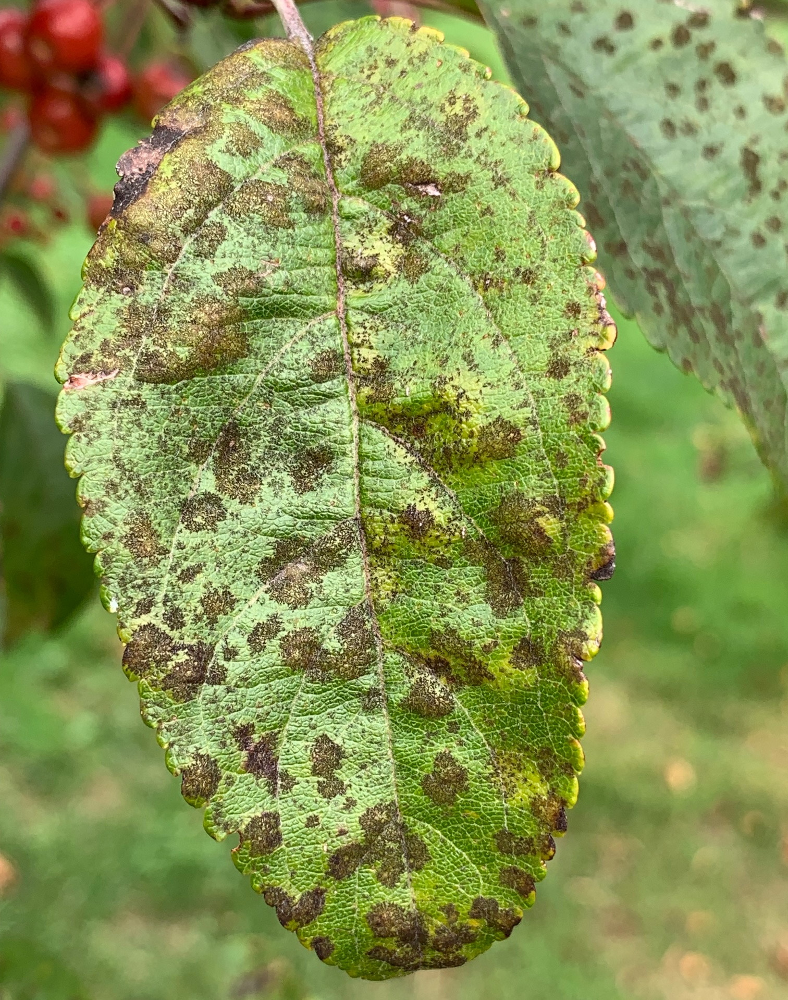
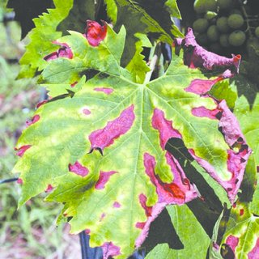

Here we have mentioned the some of the diseases that our model can predict. These are the most common type of diseases that occur to the plants.
Different types of plant diseases
Apple Scab
Apple scab is the most common disease of apple and crabapple trees in Minnesota. Scab is caused by a fungus that infects both leaves and fruit. Scabby fruit are often unfit for eating. Infected leaves have olive green to brown spots. Leaves with many leaf spots turn yellow and fall off early. Leaf loss weakens the tree when it occurs many years in a row.
Apple Black Rot
Black rot is a disease of apples that infects fruit, leaves, and bark caused by the fungus Botryosphaeria obtusa. It can also jump to healthy tissue on pear or quince trees but is typically a secondary fungus of weak or dead tissues in other plants
Cedar Apple Rust
Cedar apple rust (Gymnosporangium juniperi-virginianae) is a fungal disease that requires juniper plants to complete its complicated two year life-cycle. Spores overwinter as a reddish-brown gall on young twigs of various juniper species. In early spring, during wet weather, these galls swell and bright orange masses of spores are blown by the wind where they infect susceptible apple and crab-apple trees.
Cherry Powdery Mildew
Powdery mildew of sweet and sour cherry is caused by Podosphaera clandestina, an obligate biotrophic fungus. ... Mid- and late-season sweet cherry (Prunus avium) cultivars are commonly affected, rendering them unmarketable due to the covering of white fungal growth on the cherry surface
Gray Leaf Spot of Corn

Gray leaf spot (GLS) is a common fungal disease in the United States caused by the pathogen Cercospora zeae-maydis in corn. Disease development is favored by warm temperatures, 80°F or 27 °C; and high humidity, relative humidity of 90% or higher for 12 hours or more.
Common Rust of Corn
__Common_rust.png)
Symptoms. Common rust produces rust-colored to dark brown, elongated pustules on both leaf surfaces. The pustules contain rust spores (urediniospores) that are cinnamon brown in color. Pustules darken as they age.
Northern leaf blight of Corn
Northern corn leaf blight (NCLB) or Turcicum leaf blight (TLB) is a foliar disease of corn (maize) caused by Exserohilum turcicum, the anamorph of the ascomycete Setosphaeria turcica. With its characteristic cigar-shaped lesions, this disease can cause significant yield loss in susceptible corn hybrids.
Black rot of Grapes
Grape black rot is a fungal disease caused by an ascomycetous fungus, Guignardia bidwellii, that attacks grape vines during hot and humid weather.
Esca (Black Measles) of Grape
ymptoms. Grapevine measles, also called esca, black measles or Spanish measles, has long plagued grape growers with its cryptic expression of symptoms and, for a long time, a lack of identifiable causal organism(s). The name 'measles' refers to the superficial spots found on the fruit
Isariopsis Leaf Spot of Grapes
On leaf surface we will see lesions which are irregularly shaped (2 to 25 mm in diameter). Initially lesions are dull red to brown in color turn black later. If disease is severe this lesions may coalesce.On berries we can see symptom similar to black rot but the entire clusters will collapse.
Huanglongbing (Citrus greening) of Orange
.png)
Citrus greening disease is a disease of citrus caused by a vector-transmitted pathogen. The causative agents are motile bacteria, Candidatus Liberibacter spp. The disease is vectored and transmitted by the Asian citrus psyllid, Diaphorina citri, and the African citrus psyllid, Trioza erytreae, also known as the two-spotted citrus psyllid.Huanglongbing (HLB) or citrus greening is the most severe citrus disease, currently devastating the citrus industry worldwide. The presumed causal bacterial agent Candidatus Liberibacter spp. affects tree health as well as fruit development, ripening and quality of citrus fruits and juice.
Peach Bacterial spot

"Bacterial spot" sometimes known as "bacterial shot hole" is a commonly encountered disease, especially on older peach trees. This disease may also be found on susceptible varieties of apricot and plum but is more frequently seen on peach and nectarine. Bacterial spot is caused by the bacterium Xanthomonas campestris pv. pruni.
Bacterial Leaf Spot of Pepper
Bacterial spot occurs on peppers and tomatoes. Many of the disease features are similar for both crops. The focus of the information presented here is on pepper. Worldwide, 16.5 million metric tons (36 million tons) of peppers are grown for fresh consumption and for use in condiments. For many people in the U.S., the bell-shaped pepper fruit is the most familiar however, non-bell-type peppers are more widely grown
Potato Early blight

Early blight of potato is a common disease found in most potato growing regions. The disease is caused by the fungus Alternaria solani, which can also afflict tomatoes and other members of the potato family.Between crops, the early blight fungus can overwinter on potato refuse in the field, in soil, on tubers, and on other solanaceous plants. Infection occurs when spores of the fungus come in contact with susceptible leaves and sufficient free moisture is present. Spore germination and infection are favored by warm weather and wet conditions from dew, rain, or sprinkler irrigation. Alternately, wet and dry periods with relatively dry, windy conditions favor spore dispersal and disease spread.
Potato Late Blight
Phytophthora infestans is an oomycete or water mold, a fungus-like microorganism that causes the serious potato and tomato disease known as late blight or potato blight. Early blight, caused by Alternaria solani, is also often called "potato blight".
Powdery Mildew on Squash
White deposits develop on the top sides of leaves that make them look like they have been dusted with flour. As this fungal disease advances, leaves become grayish-green and become dry to the touch. Eventually these leaves turn brown and fall off. Powdery mildew is most likely to infect older plants that are beginning to decline after producing a crop.
Strawberries With Leaf Scorch
Scorched strawberry leaves are caused by a fungal infection which affects the foliage of strawberry plantings. The fungus responsible is called Diplocarpon earliana. Strawberries with leaf scorch may first show signs of issue with the development of small purplish blemishes that occur on the topside of leaves.!
Bacterial Spot of Tomato
Bacterial spot of tomato is caused by Xanthomonas vesicatoria, Xanthomonas euvesicatoria, Xanthomonas gardneri, and Xanthomonas perforans. These bacterial pathogens can be introduced into a garden on contaminated seed and transplants, which may or may not show symptoms.
Tomato Early Blight
This is a common disease of tomato occurring on the foliage at any stage of the growth. The fungus attacks the foliage causing characteristic leaf spots and blight. Early blight is first observed on the plants as small, black lesions mostly on the older foliage.
Late Blight On Tomatoes
Tomato late blight is caused by the oomycete pathogen Phytophthora infestans (P. infestans). The pathogen is best known for causing the devastating Irish potato famine of the 1840s, which killed over a million people, and caused another million to leave the country
Leaf Mold of Tomato
Cladosporium fulvum is an Ascomycete called Passalora fulva, a non-obligate pathogen that causes the disease on tomato known as the tomato leaf mold. P. fulva only attacks tomato plants, especially the foliage, and it is a common disease in greenhouses, but can also occur in the field.
Septoria Leaf Spot of Tomato
Septoria leaf spot is caused by a fungus, Septoria lycopersici. It is one of the most destructive diseases of tomato foliage and is particularly severe in areas where wet, humid weather persists for extended periods. Septoria leaf spot usually appears on the lower leaves after the first fruit sets.
Tomato Red Spider Mite

The two-spotted spider mite is the most common mite species that attacks vegetable and fruit crops in New England. Spider mites can occur in tomato, eggplant, potato, vine crops such as melons, cucumbers, and other crops. Two-spotted spider mites are one of the most important pests of eggplant.
Target Spot on Tomatoes
target spot of tomato is a fungal disease that attacks a diverse assortment of plants, including papaya, peppers, snap beans, potatoes, cantaloupe, and squash as well as passion flower and certain ornamentals.Target spot of tomato is favored by temperatures of 68 to 82°F and leaf wetness periods as long as 16 hours. The target spot fungus can survive in host residue for a period.
Tomato Yellow Leaf Curl Virus
Tomato yellow leaf curl virus is a DNA virus from the genus Begomovirus and the family Geminiviridae. TYLCV causes the most destructive disease of tomato, and it can be found in tropical and subtropical regions causing severe economic losses.
Tomato Mosaic Virus
Tomato mosaic virus (ToMV) is a plant pathogenic virus. It is found worldwide and affects tomatoes and many other plants.The foliage of affected tomato plants shows mottling, with alternating yellowish and darker green areas, the latter often appearing thicker and raised giving a blister-like appearance. !